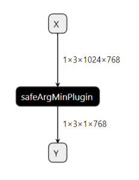
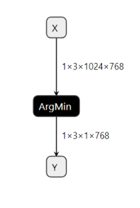

Safety argmin plugin benchmark
 VS 
Precision and accuracy 100%:
Precision
arrarysize=2304+--------------------+---------+| Compare Status | Success |+--------------------+---------+| Total diff num | 0 || > 10E-1 percentage | 0.000 % || > 10E-2 percentage | 0.000 % || > 10E-3 percentage | 0.000 % || > 10E-4 percentage | 0.000 % || > 10E-5 percentage | 0.000 % || > 10E-6 percentage | 0.000 % |+--------------------+---------+Time consumption in Orin target:
Profile
&&&& RUNNING TensorRT.sample_safe_plugin_infer [TensorRT v8610] # ./safe_plugin_infer --loadEngine=aglarge.engine --dumpInTensor=input1.3.1024.768.tensorinput tensor size = {1x3x1024x768x}iterators: 4824, total time: 348.5783 msec, Time= 0.072 mseccudacudacudacuda errorID: 0, no error,[01/17/1970-07:31:55] [I] Starting inference[01/17/1970-07:31:59] [I] The e2e network timing is not reported since it is inaccurate due to the extra synchronizations when the profiler is enabled.[01/17/1970-07:31:59] [I] To show e2e network timing report, add --separateProfileRun to profile layer timing in a separate run or remove --dumpProfile to disable the profiler.[01/17/1970-07:31:59] [I][01/17/1970-07:31:59] [I] === Profile (6343 iterations ) ===[01/17/1970-07:31:59] [I] Layer Time (ms) Avg. Time (ms) Median Time (ms) Time %[01/17/1970-07:31:59] [I] node_of_Y 1250.89 0.1972 0.1971 100.0[01/17/1970-07:31:59] [I] Total 1250.89 0.1972 0.1971 100.0[01/17/1970-07:31:59] [I]&&&& PASSED TensorRT.trtexec [TensorRT v8610] # ../trtexec --onnx=argminstd_large.onnx --loadInputs=X:input1.3.1024.768.tensor --exportOutput=trt_output.json --dumpProfileStandard: 0.1972ms
Safety: 0.072ms